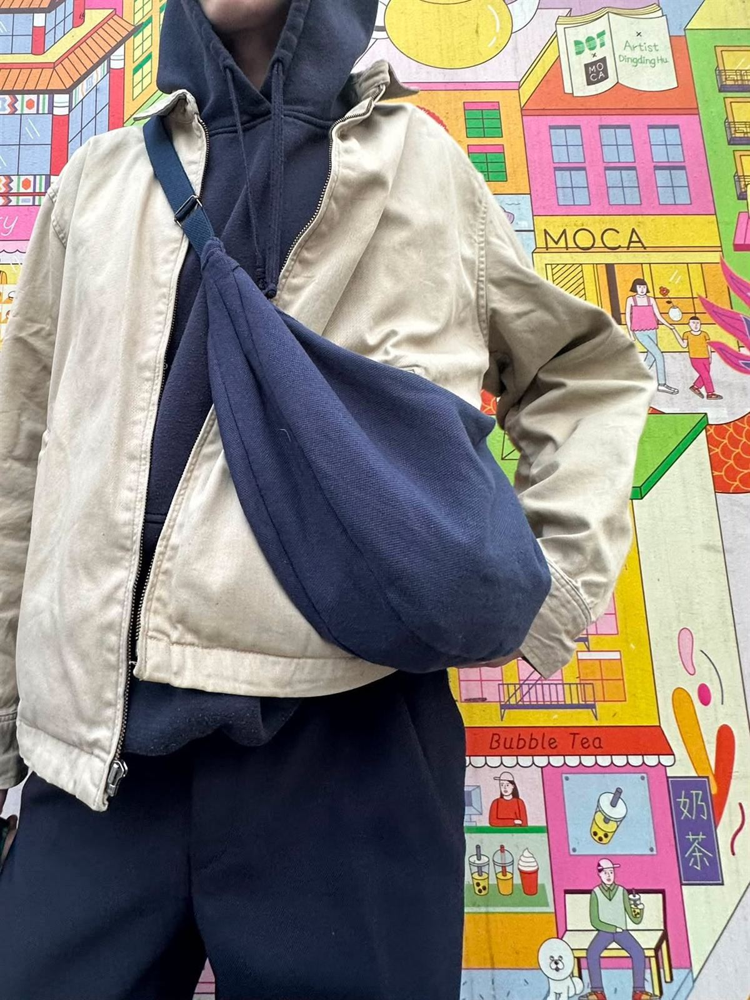
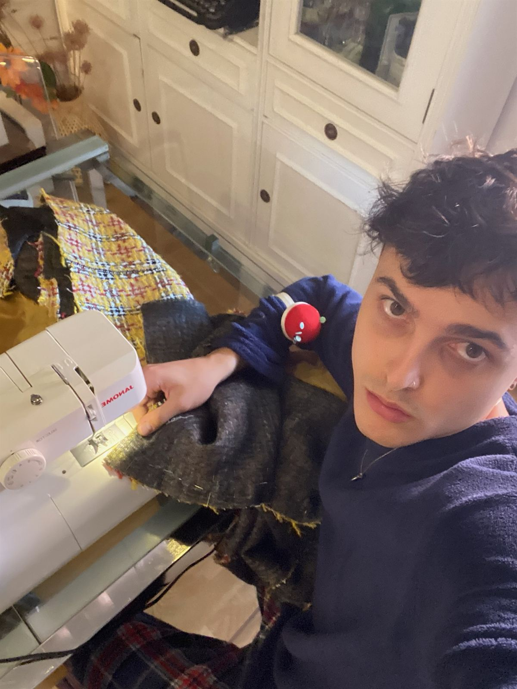
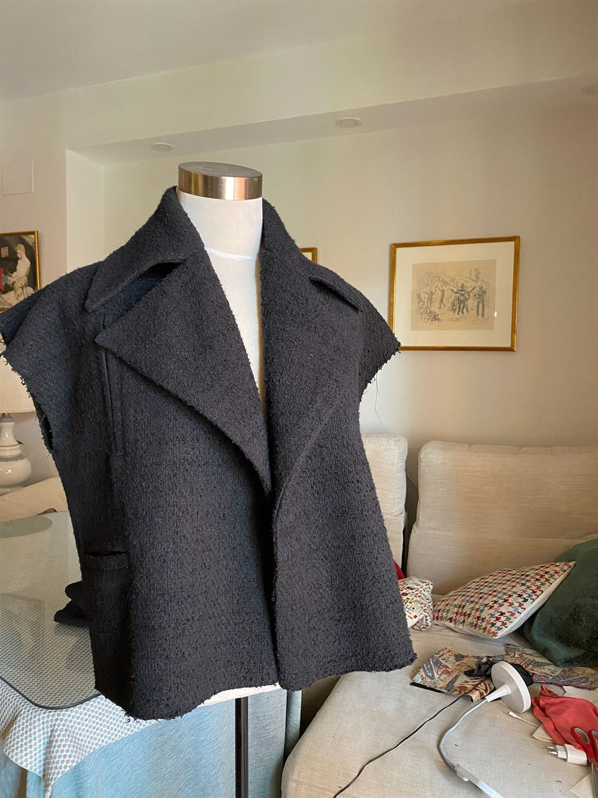
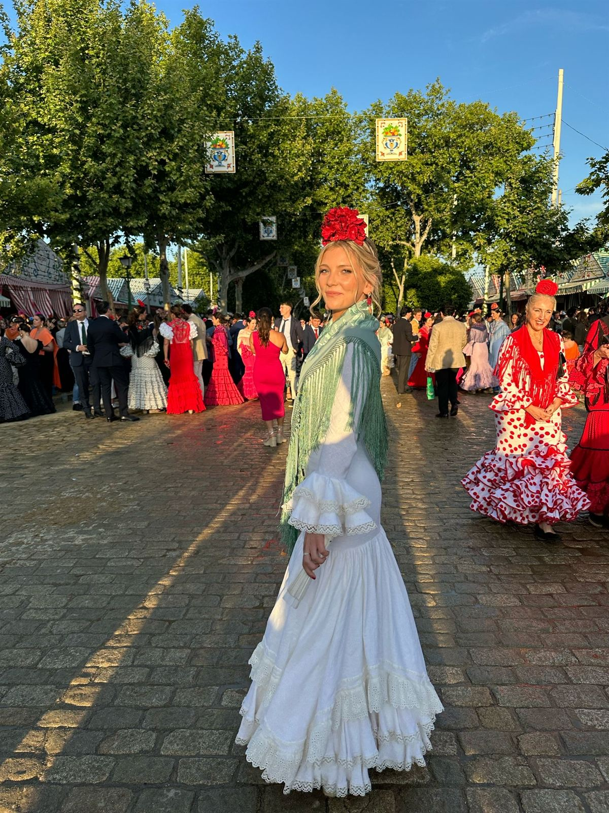
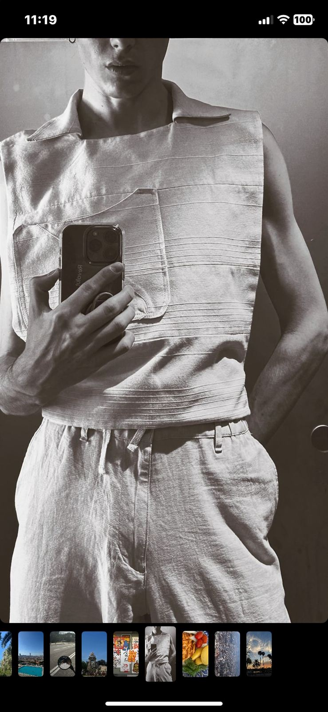
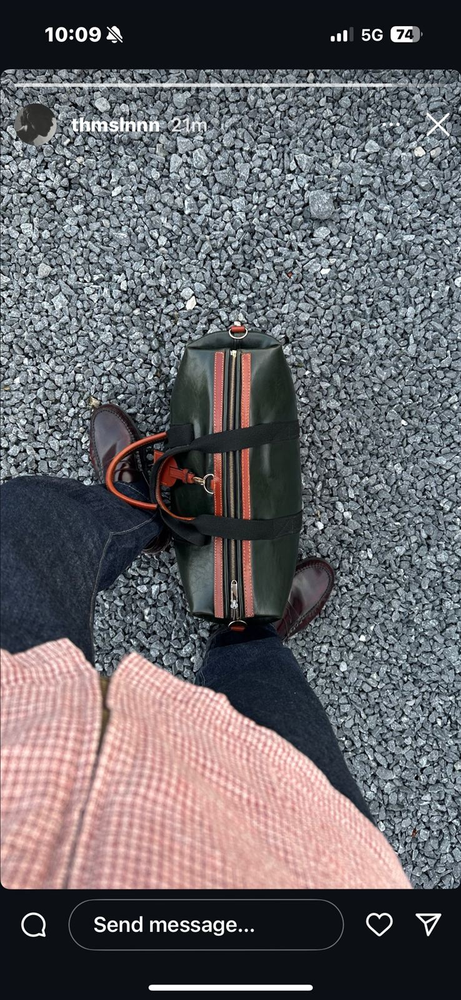
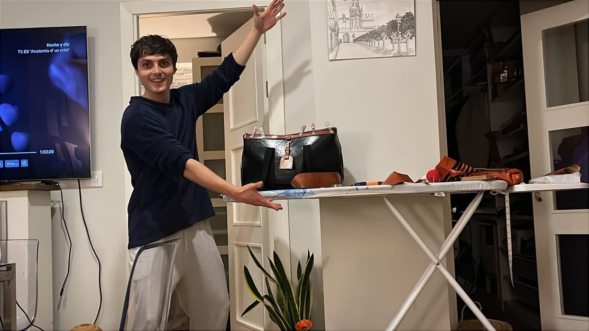
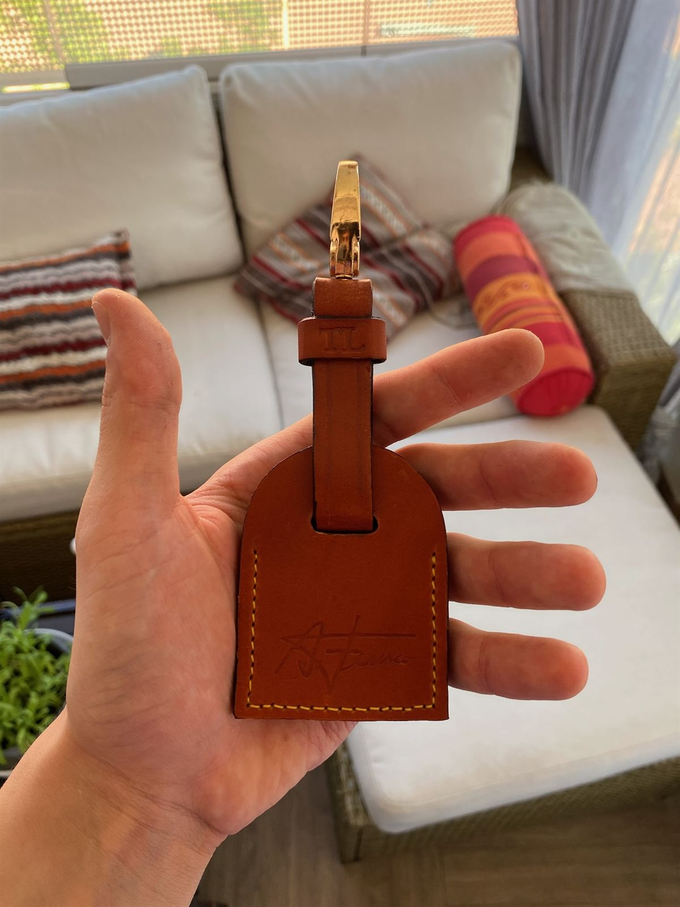
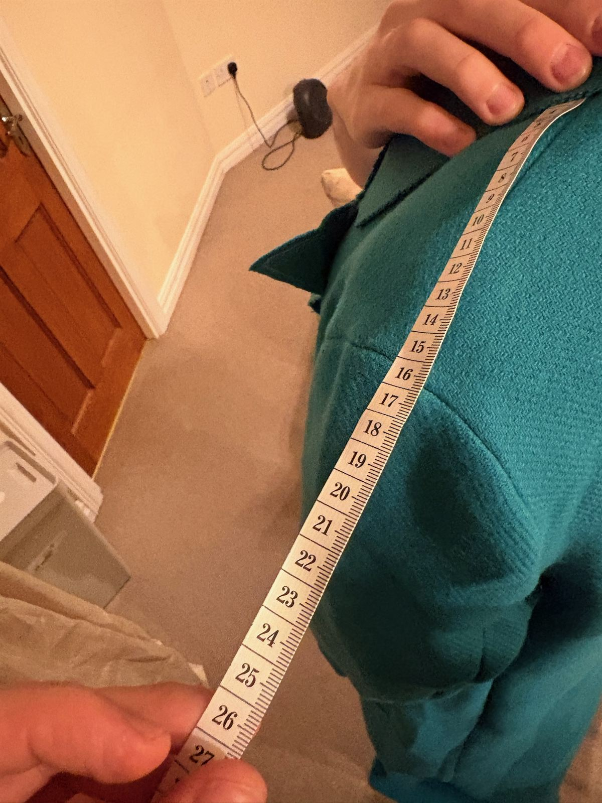

Crossbody bagOwn pattern2023

Eight pieces, 2023–2026. Two are my own patterns. The other six are technical studies after garments I admire, made to understand how they are built — not reproductions for sale.


















